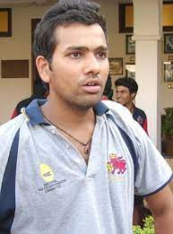

personal information
| full name | Rohit Gurunath Sharma |
|---|---|
| born | 30 April 1987 (age 35) Nagpur, Maharashtra, India |
| nickname | hitman |
| height | 1.75 m(5 fit 9 in) |
| bowling | Right-arm off break |
| role | opening batsman |
Early life
Sharma was born on 30 April 1987 in Bansod, Nagpur, Maharashtra.[2] His mother, Purnima Sharma, is from Visakhapatnam, Andhra Pradesh.[3] His father, Gurunath Sharma, worked as a caretaker of a transport firm storehouse. Sharma was raised by his grandparents and uncles in Borivali because of his father's low income. He would visit his parents, who lived in a single-room house in Dombivli, only during weekends.[4] He has a younger brother, Vishal Sharma.[5] Sharma joined a cricket camp in 1999 with his uncle's money. Dinesh Lad, his coach at the camp, asked him to change his school to Swami Vivekanand International School, where Lad was the coach and the cricket facilities were better than those at Sharma’s old school. Sharma recollects, "I told him I couldn't afford it, but he got me a scholarship. So for four years I didn't pay a penny, and did well in my cricket".[5] Sharma started as an off-spinner who could bat a bit before Lad noticed his batting ability and promoted him from number eight to open the innings. He excelled in the Harris and Giles Shield school cricket tournaments, scoring a century on debut as an opener.[6]
Youth and domestic first-class career
Sharma made his List A debut for West Zone against Central Zone in the Deodhar Trophy at Gwalior in March 2005. Batting at number eight, he scored 31 not out as West Zone won by 3 wickets with 24 balls remaining. Cheteshwar Pujara and Ravindra Jadeja made their debuts in the same match.[7] It was Sharma's unbeaten innings of 142 in 123 balls against North Zone at the Maharanna Bhupal College Ground in Udaipur in the same tournament that brought him into the limelight.[8] He visited Abu Dhabi and Australia with the India A squad and was then included among India's 30-member probables list for the upcoming ICC Champions Trophy tournament, although he did not make the final squad.[9] Sharma made his first-class debut for India A against New Zealand A at Darwin in July 2006. He scored 57 and 22 as India won by 3 wickets.[10] He made his Ranji Trophy debut for Mumbai in the 2006–07 season and scored 205 off 267 balls against Gujarat.[11] Mumbai went on to win the tournament with Sharma scoring a half-century (57) in his second innings in the final against Bengal.[12] Sharma has spent his entire domestic first-class career at Mumbai. In December 2009, he made his highest career score of 309 not out in the Ranji Trophy against Gujarat.[13] In October 2013, upon the retirement of Ajit Agarkar, he was appointed team captain ahead of the 2013–14 season.[14]
International career
In November 2013, during Sachin Tendulkar's farewell series, Sharma made his Test debut at Eden Gardens in Kolkata against West Indies and scored 177, the second-highest score on debut by an Indian to Shikhar Dhawan (187).[15] He followed it up with 111 (not out) in the second Test at his home ground, the Wankhede Stadium in Mumbai.[16] Having been out of the Test team since 2017–18, Sharma went on the 2018–19 tour of Australia after he had earned a recall earlier. Chief selector M. S. K. Prasad said the reason for his recall was that his natural game suited the bouncy Australian pitches.[17] Sharma played in the first Test in Adelaide, scoring 37 and 1 in an Indian victory.[18][19] During the first Test, he sustained a minor injury which saw him miss the second Test in Perth.[20] He recovered for the Boxing Day third Test at Melbourne and scored 63 (not out) to help India total 443/7 and win both the Test and the series.[21] After the third Test, Sharma had to return to India for the birth of his daughter.[22] In October 2019, in the third Test against South Africa, Sharma scored his 2,000th run and his first double century in Tests. He made 212 in the first innings of the match.[23][24] Sharma was named as vice-captain of India's Test team during the tour of Australia in 2020, replacing Cheteshwar Pujara.[25][26][27] Sharma had a successful home series against England in 2021. Instrumental in his team's comeback after a defeat in the first Test at Chennai, he scored a century, one that The Guardian termed "deserves to be considered one of the greatest this century."[28] He put on 167 runs with Ajinkya Rahane for the fourth wicket while making 161 runs in an innings that included 18 fours and two sixes.[29] India went on to win the Test by 317 runs.[30] He top-scored for his side in both innings of the low-scoring third Test in Ahmedabad with scores of 66 and 25 contributing to his team's win.[31] Sharma finished the series aggregating 345 runs, the most for India, at an average of 58.[28] He went on to score his first overseas Test century on 4 September 2021 with an innings of 127 against England at The Oval, also reaching the milestone of 3,000 runs in Test cricket.[32] Sharma was appointed captain of India's Test team in February 2022, succeeding Virat Kohli, ahead of a two-match series against Sri Lanka.[33] Sunil Gavaskar praised his leadership and Chetan Sharma, India's chairman of selectors, said: "We will groom future captains under him".[34]
Other one-day international matches
Sharma made his full international debut in a one-day match against Ireland in Belfast on 23 June 2007. This was part of the 2007 Future Cup competition which also involved South Africa. He was number seven in the batting order but did not bat as India won the game by 9 wickets.[42] He scored his maiden ODI half-century (52) against Pakistan at Jaipur on 18 November 2007 and was selected for the Indian squad going to the 2007–08 Commonwealth Bank Series in Australia.[43][44] In that series, he scored 235 runs at an average of 33.57 with 2 fifties, including 66 in the first final at Sydney when he partnered Sachin Tendulkar for most of India's successful run chase.[45][46] After that, however, his ODI performances suffered a downturn and he lost his middle-order position to Suresh Raina. Later, Virat Kohli took his position as the reserve batsman. In December 2009, following his triple century in the Ranji Trophy, he was recalled to the ODI team for the tri-nations tournament in Bangladesh as Tendulkar opted to rest in the series.[47] He scored his maiden ODI century (114) against Zimbabwe on 28 May 2010 and followed it up with another century in the next match of the tri-series against Sri Lanka on 30 May 2010 by scoring 101 not out.[48][49] He had a run of poor form in South Africa just before the 2011 World Cup and as a consequence he was left out of India's squad for the tournament.[50] Sharma was recalled to the limited-overs squad for the tour of the West Indies in June and July 2011.[51] In the first match at Queen's Park Oval, he scored 68 (not out) from 75 balls with three fours and a six. In the third match at the Sir Vivian Richards Stadium in Antigua, he scored a match-winning 86 off 91 balls after India had been reduced to 92 for 6.[52] He had a disastrous loss of form in 2012 and scored only 168 runs in the whole calendar year at the very low average of 12.92 with just a single half-century. Even so, his captain Mahendra Singh Dhoni showed faith in him, and his career was revived in 2013. Dhoni decided to move him up the batting order to open the innings with Shikhar Dhawan in the 2013 ICC Champions Trophy. The pairing was a success and India won the competition, defeating hosts England in the final.[53] His good form continued and, later in the year against Australia, he scored 141 (not out) in Jaipur. He followed that with 209 off 158 balls in Bangalore and established a then-world record for the most sixes (16) in a one-day international innings (since beaten by Eoin Morgan of England with 17).[54] On 13 November 2014, playing against Sri Lanka at Eden Gardens in Kolkata, Sharma broke the world record for the highest score in a one-day international innings with 264 from 173 deliveries.[55][56] In December 2017, India's captain Virat Kohli was rested for the series against Sri Lanka, in preparation for India's tour to South Africa, which began in the first week of January 2018. In his place, Sharma was appointed team captain and India under his leadership won the series 2–1, their eighth consecutive series win since defeating Zimbabwe in June 2016.[57][58] Sharma also hit his third ODI double-century in this series, scoring 208 (not out) to extend his record of most ODI double-centuries by a player.[59] In September 2018, in the absence of many top players including regular captain Virat Kohli, Sharma led India to win the 2018 Asia Cup, where they defeated Bangladesh in the final.[60] On 12 January 2019, in the opening match against Australia at the Sydney Cricket Ground, Sharma scored 133 but it was in vain as India lost by 34 runs. It was his 22nd century in one-day internationals.[61] At Delhi on 13 March 2019, in the fifth and final match of a home series against Australia, Sharma scored 56 including his 8,000th run in one-day internationals. It was his 200th innings.[62] In 2019, he scored the most runs in ODIs by any batsman, with 1,490 runs in the calendar year, including 7 centuries.[63] In November 2020, Sharma was nominated for the ICC Men's ODI Cricketer of the Decade award.[64][65] In July 2022, Sharma became the first Indian captain to lead their team to both T20I and ODI series wins in England. He became the 3rd Indian captain to win an ODI series in England, and the first since 2014.[66]
Outside cricket
personal life

Sharma married Ritika Sajdeh in December 2015.[107] He is a practitioner of the meditation technique Sahaj Marg.[108]
acheivement

- 2015-arjuna awards
- 2020-Major Dhyan Chand Khel Ratna Award